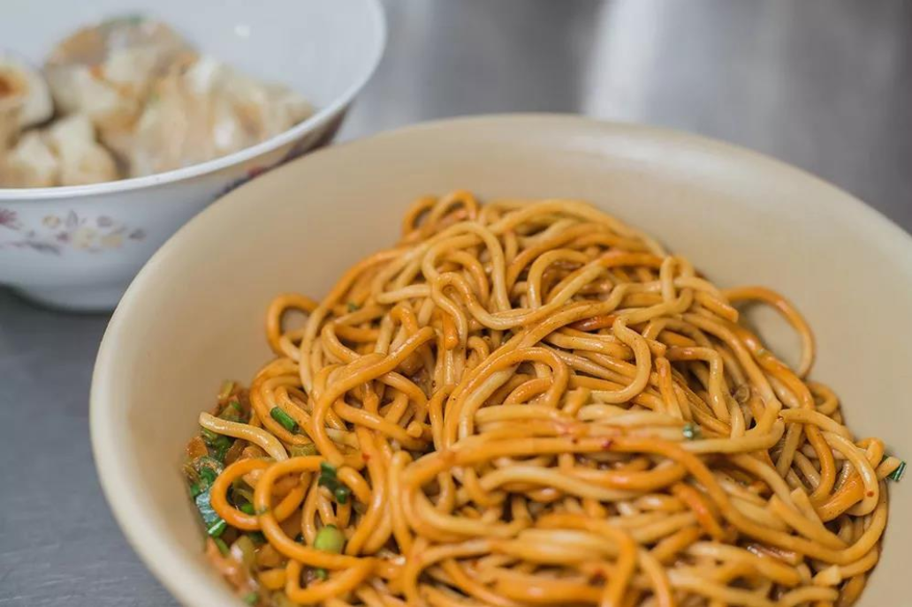
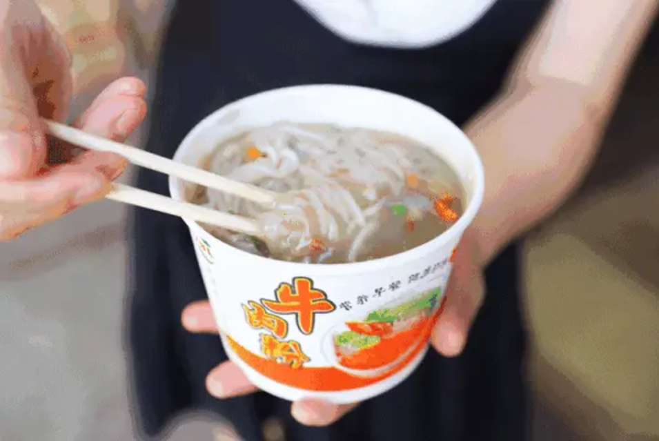
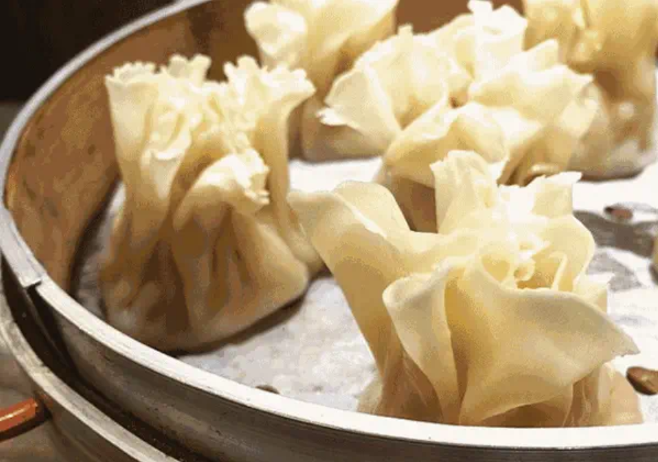
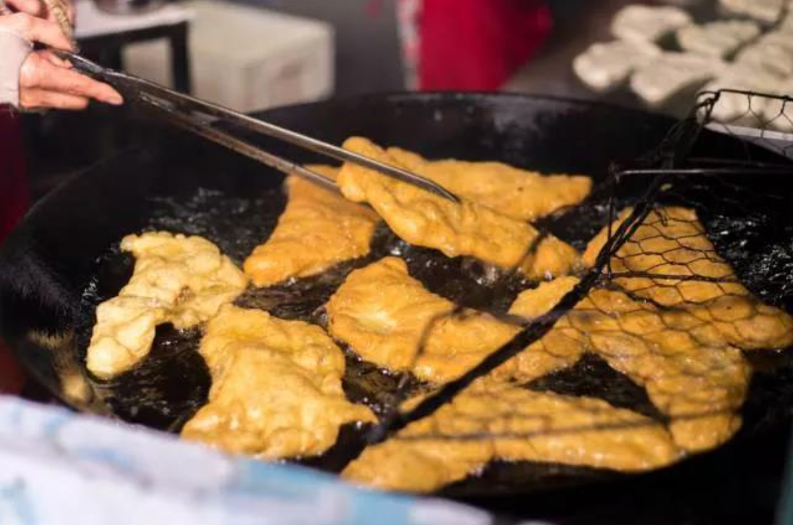
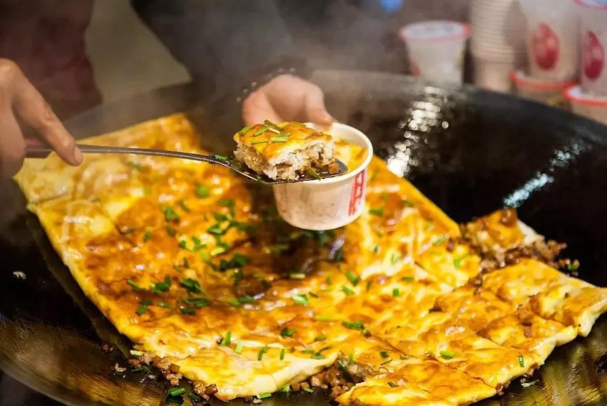

武汉人把吃早餐俗称为“过早”，历史上武汉码头文化兴盛，人们要抓紧时间赶到集市，形成在外“过早”的习惯，并延续至今。清晨，每家早餐铺前都能看到人车交织、拥挤嘈杂的景象，这是属于武汉的市井气息。
在外地人眼中，热干面俨然已是武汉美食的一张响亮名片。
热干面不同于凉面，也不同于汤面，劲道十足的面条，淋上芝麻酱、香油和辣椒油，搅拌一番，在酱汁凝固前嗦进嘴里，风味恰到好处。武汉的每一家热干面，酱汁口味都有些不同，早晨起来来一碗热干面，就是这座城市最独特的问候方式。
糊汤粉，被誉为“武汉人的羊肉泡馍”。
千湖之省，百湖之市，武汉的早餐里自然不能少了鱼。鲜活的小鱼熬成糊汤，加上稻米熬出的米粉，撒上小葱、虾皮、胡椒、葱花、辣萝卜。武汉的过早，没有比这个更鲜的。在武汉人眼里，糊汤粉一定要与油条搭配着来吃。把油条浸在汤里，那种鲜香和酥软的口感，就是对清早老武汉人的一种馈赠。
武汉的过早文化里有一个非常重要的指标，那就是油多、抗饿，烧麦算是其中的代表。
烧麦里面有糯米、肉粒、香菇……吃起来够鲜嫩，入口瞬间还带有浓郁的胡椒味，高汤浓郁入味，加以每一口的皮薄软嫩，味道着实鲜美。烧麦通常夹着油饼吃，这是武汉人钟爱的“过早”小食。油饼又酥又脆，烧麦又粘又润，混合在一起的口味实在是独特。
鸡冠饺不是饺子，只是因为形如鸡冠、饺子而得名。
老配方的鸡冠饺由老面制成，将面团揪成小剂子，轻轻一按压，挑起一大团肉馅，一对折，饺子的雏形便已初现。再用双手铺平，慢慢拉大，放进翻滚得正旺的油锅，只等它由白白胖胖慢慢变成一抹金黄油亮。外皮酥脆，内馅绵软，武汉人描述它的口感“蛮肉坨”。
要说武汉“过早”最能填饱人肚子的，还数豆皮。
豆皮的“皮”，是由脱皮绿豆和米浆制成，而豆皮的“馅儿”，必须是糯米。豆皮的皮讲究“皮薄、浆清、火功正”，这样煎出的豆皮外脆内软、油而不腻。其中最美味的当然要数三鲜豆皮了，三鲜豆皮以馅中有鲜肉、鲜蛋、鲜虾（或鲜肉、鲜菇和鲜笋）而得名，吃起来香酥嫩脆，咬上一口，就忘不了这味道。
那么，看完之后，你最想吃武汉的哪种美食呢？